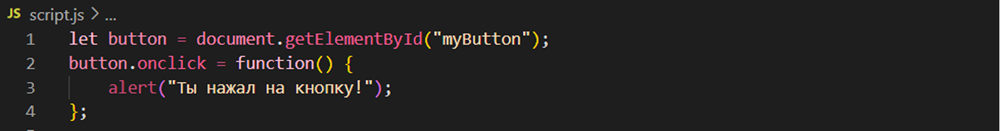

модуль 4. основы javascript
Хотите добавить интерактивность на ваши страницы? Узнайте, как JavaScript поможет вам сделать ваш сайт живым и привлекательным!
Хотите добавить интерактивность на ваши страницы? Узнайте, как JavaScript поможет вам сделать ваш сайт живым и привлекательным!
Перед тем, как погрузиться в изучение JavaScript, важно понимать, где и как мы будем работать.
Наши программы будут записываться в файлы с расширением.js. Это стандартное расширение для JavaScript. Например, создадим файл с именем script.js, в который будем писать наш код.
Чтобы запустить JavaScript-код, нам понадобится HTML-документ, в который мы будем подключать наш .js файл. Это позволит браузеру выполнять наш код. Для этого в HTML-документе необходимо подключить script.js.
JavaScript — это язык программирования, который позволяет делать веб-страницы интерактивными. Когда ты смотришь на сайт, где есть анимации, всплывающие окна или игры, вероятно, в его основе лежит JavaScript. С помощью него можно:
переменные — это как коробки, в которых ты можешь хранить информацию. Например, ты можешь создать переменную для хранения имени пользователя. В JavaScript переменные создаются с помощью ключевых слов let, const или var.
В JavaScript есть несколько типов данных:
операторы позволяют нам делать разные действия с переменными, например:
Теперь поговорим о том, как взаимодействовать с пользователями через браузер.
Для ввода данных мы можем использовать функцию prompt(), которая показывает окно, где пользователь может ввести информацию.
Для вывода данных в браузере мы можем использовать alert() или console.log(). alert() показывает всплывающее окно, а console.log() выводит информацию в консоль браузера (кстати, это будет очень полезно для разработчиков).
DOM — это структура, которая представляет HTML-документ. С её помощью можно изменять элементы на странице с помощью JavaScript.
Также JavaScript позволяет добавлять события на элементы. Например, сделаем так, чтобы при нажатии кнопки всплывало сообщение:
Теперь давай создадим простую интерактивную задачу. Как насчет интерактивного веб-сайта для игрового тренажера? Ну например сделаем игру "Угадай число".
Сначала пропишем структуру на HTML:
Теперь займемся стилями:

Теперь настроим остальные стили:
Ну и закончим на JS:
Перезапустить игру можно так:
Посмотрим на результат:
Да, JavaScript - это то, что придется учить на протяжении всей твоей карьеры. Сегодня мы изучили самый минимум, который тебе может пригодиться. Если хочешь узнать больше, то советую тебе этот учебник.